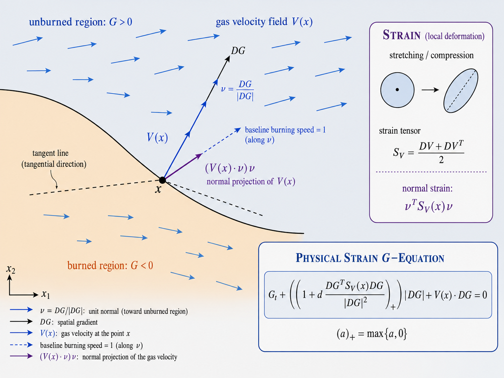

Two Lean 4 appendices record conditional formalizations of a sufficient p=e_1 subregime and the logical assembly of the barrier-certificate rigidity theorem.
Abstract
We disprove the expectation stated by Xin, Yu, and Ronney that the physical positive part strain $G$-equation should possess an effective burning velocity in cellular flows. For the standard cellular flow in dimension two $V_A(x_1,x_2)=A(-\sin x_1\cos x_2,\cos x_1\sin x_2)$, if $0<d<20/399$ and $\sqrt{1+4d^2}<Ad\le1+d/10$, then for every unit planar slope the periodic correction develops oscillations at least linearly in time. The solution remains bounded below on an explicit horizontal channel through $(π,0)$, while at $(π/2,0)$ it decreases at rate at least $CA/\log A$, with $C>0$ universal. The same conclusions hold for arbitrary continuous periodic perturbations of planar initial data. Under the physical scaling $V_A(x/\varepsilon)$ and $d_\varepsilon=\varepsilon d$, an order one value gap persists between points at distance $O(\varepsilon)$ at every positive macroscopic time, so the rescaled solutions have no locally uniformly convergent subsequence. The proof uses the Hamiltonian sandwich $H_{\mathrm{unc}}\le H_+\le\widehat H$. The upper comparator $\widehat H$ is a rectangular support function, equivalently an upper expectation over a state-dependent credal set, whose reversed control dynamics possess an invariant comparison channel. We also prove that for any $C^2$ incompressible periodic flow, every $\varepsilon$-outward barrier certificate has covering radius at most $2d\varepsilon$ for all sufficiently small $\varepsilon$. We further discuss implications for statistics and machine learning: rectangular, time-consistent local uncertainty need not imply forgetting of the initial state in the long run, so additional global stability or ergodicity conditions are needed in robust sequential decision making. Two Lean 4 appendices record conditional formalizations of a sufficient $p=e_1$ subregime and of the logical assembly of the rigidity theorem for barrier certificates.
Problem
Xin, Yu, and Ronney conjectured that the physically motivated positive-part strain G-equation should possess an effective burning velocity (homogenize) in cellular flows. Whether the physical cutoff restores homogenization was open.
Approach
The authors analyze the two-dimensional standard cellular flow and construct a Hamiltonian sandwich H_unc <= H_+ <= H-hat between the uncut, physical-cutoff, and a convex rectangular majorant Hamiltonian. The upper comparator is interpreted as an upper expectation over a state-dependent credal set with an invariant comparison channel, transferring slow lower bounds; the Xin-Yu estimate transfers fast upper bounds. Two Lean 4 appendices provide conditional formalizations of a sufficient p=e_1 subregime and of the logical assembly of the barrier-certificate rigidity theorem.

Figure 1. Schematic of the physical strain G -equation ( 2 ). The zero level set \Gamma_{t} represents the flame front, with unit normal \nu=DG/|DG| . The surrounding flow V carries the front, while the normal strain \nu^{\mathsf{T}}S_{V}\nu modifies its local burning speed. The positive part cutoff suppresses burning under sufficiently strong compression without allowing reversal.
Results
For explicit parameter ranges, the periodic correction develops oscillations at least linearly in time for every unit slope, so no phase-independent effective burning velocity exists. Under physical scaling, an order-one value gap persists between nearby points at every positive macroscopic time, precluding locally uniform convergence; every epsilon-outward barrier certificate has covering radius at most 2*d*epsilon.